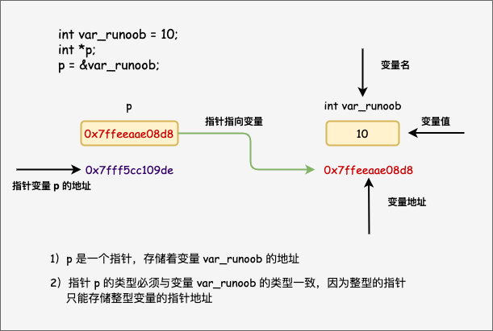

C Punteros
Aprender punteros en C es a la vez simple e interesante. Con los punteros, se puede simplificar la ejecución de algunas tareas de programación en C, y hay algunas tareas, como la asignación dinámica de memoria, que no se pueden realizar sin punteros. Por lo tanto, para convertirse en un buen programador de C, es necesario aprender punteros.
Como usted sabe, cada variable tiene una ubicación de memoria, y cada ubicación de memoria define una dirección accesible mediante el&operador para acceder a la dirección, que representa una dirección en la memoria.
Vea el siguiente ejemplo, que mostrará la dirección de la variable definida:
Ejemplo
Cuando el código anterior se compila y ejecuta, produce el siguiente resultado:
var_runoob 变量的地址： 0x7ffeeaae08d8

A través del ejemplo anterior, hemos aprendido qué es una dirección de memoria y cómo acceder a ella. A continuación, veamos qué es un puntero.
¿Qué es un puntero?
Un puntero es una dirección de memoria; una variable de puntero es una variable que se utiliza para almacenar direcciones de memoria. Al igual que otras variables o constantes, debe declarar el puntero antes de usarlo para almacenar la dirección de otra variable. La forma general de declaración de una variable de puntero es:
type *var_name;
Aquí,typees el tipo base del puntero, que debe ser un tipo de datos válido de C,var_namees el nombre de la variable de puntero. El asterisco utilizado para declarar punteros*es el mismo asterisco que se usa en la multiplicación. Sin embargo, en esta declaración, el asterisco se usa para especificar que una variable es un puntero. Las siguientes son declaraciones de puntero válidas:
Todos los tipos de datos reales, ya sean enteros, flotantes, caracteres u otros tipos de datos, el tipo de valor correspondiente al puntero es el mismo: todos son un número hexadecimal largo que representa una dirección de memoria.
La única diferencia entre punteros de diferentes tipos de datos es el tipo de datos de la variable o constante a la que apunta el puntero.
¿Cómo usar punteros?
Al usar punteros, se realizan con frecuencia las siguientes operaciones: definir una variable de puntero, asignar la dirección de una variable al puntero y acceder al valor en la dirección disponible en la variable de puntero. Esto se hace mediante el operador unario*para devolver el valor de la variable en la dirección especificada por el operando. El siguiente ejemplo involucra estas operaciones:
Ejemplo
Cuando el código anterior se compila y ejecuta, produce el siguiente resultado:
var 变量的地址: 0x7ffeeef168d8 ip 变量存储的地址: 0x7ffeeef168d8 *ip 变量的值: 20
El puntero NULL en C
Al declarar una variable, si no hay una dirección exacta para asignar, asignar un valor NULL a la variable de puntero es una buena práctica de programación. Los punteros a los que se les asigna el valor NULL se denominan空punteros NULL.
El puntero NULL es una constante con valor cero definida en la biblioteca estándar. Vea el siguiente programa:
Ejemplo
Cuando el código anterior se compila y ejecuta, produce el siguiente resultado:
ptr 的地址是 0x0
En la mayoría de los sistemas operativos, los programas no pueden acceder a la memoria en la dirección 0, porque esa memoria está reservada por el sistema operativo. Sin embargo, la dirección de memoria 0 tiene un significado especial: indica que el puntero no apunta a una ubicación de memoria accesible. Pero por convención, si el puntero contiene un valor nulo (cero), se asume que no apunta a nada.
Para comprobar si hay un puntero nulo, puede usar una sentencia if, como se muestra a continuación:
Detalles de los punteros en C
En C, hay muchos conceptos relacionados con punteros. Estos conceptos son simples pero muy importantes. A continuación se enumeran algunos conceptos importantes relacionados con punteros que los programadores de C deben tener claros:
| Concepto | Descripción |
|---|---|
| Aritmética de punteros | Se pueden realizar cuatro operaciones aritméticas con punteros: ++, --, +, - |
| Arreglo de punteros | Se pueden definir arreglos que almacenan punteros. |
| Puntero a puntero | C permite punteros a punteros. |
| Pasar punteros a funciones | Pasar parámetros por referencia o por dirección, de modo que los parámetros pasados se modifiquen en la función llamada. |
| Devolver punteros desde funciones | C permite que las funciones devuelvan punteros a variables locales, variables estáticas y memoria asignada dinámicamente. |
STM novato
578***539@qq.com
Un puntero es una variable cuyo valor es la dirección de otra variable, es decir, la dirección directa de una ubicación de memoria. Al igual que otras variables o constantes, debe declararlo antes de usar el puntero para almacenar la dirección de otra variable.
Para entender los punteros, primero debe entender la memoria de la computadora. La memoria de la computadora se divide en unidades de memoria numeradas secuencialmente. Cada variable se almacena en una unidad de memoria, que se denomina dirección.
#include <stdio.h> int main () { int var = 20; /* 实际变量的声明 此时的 VAR 这个变量是存在某个地址的，地址对应某个内存单元，该单元中存储了数据20 */ int *ip; /* 指针变量的声明 定义了一个指针 即一个内存单元的地址变量 */ ip = &var; /* 在指针变量中存储 var 的地址 就是将地址值赋值给指针这个变量*/ /* 在指针变量中存储的地址 利用&符号直接输出了var所存储的数据的内存单元的地址*/ printf("Address of var variable: %p\n", &var ); /* 在指针变量中存储的地址 ip代表的是这个赋值到的地址的值 所以输出的是地址值 */ printf("Address stored in ip variable: %p\n", ip ); /* 使用指针访问值 *ip代表的是定义到这个内存单元之后，内存单元中所存储的数据的值也就是将20赋值给var中20这个值 */ printf("Value of *ip variable: %d\n", *ip ); return 0; }STM novato
578***539@qq.com
STM novato
578***539@qq.com
Un puntero es una variable, por lo que se puede usar cualquier nombre de variable válido. En la mayoría de los sistemas operativos, los programas no pueden acceder a la memoria en la dirección 0, porque esa memoria está reservada por el sistema operativo.
Sin embargo, la dirección de memoria 0 tiene un significado especial: indica que el puntero no apunta a una ubicación de memoria accesible.
Pero por convención, si el puntero contiene un valor nulo (cero), se asume que no apunta a nada.
Todos los punteros deben inicializarse al crearse; si no se sabe a qué apuntan, se les asigna 0. Los punteros deben inicializarse; los punteros no inicializados se denominan punteros salvajes (punteros no inicializados).
#include <stdio.h> int main () { int *p = 0; int a ; p = &a; printf ("输入一个数字\n"); scanf ("%d",p); printf("%d\n",*p); }El ejemplo define la variable a y la variable de puntero p.p = &aIndica que la variable de puntero apunta a la variable a; la dirección almacenada en p es la dirección de a (&a); y *p se refiere al valor en la unidad de memoria cuya dirección está almacenada en p, es decir, la variable a.
STM novato
578***539@qq.com
HBR1
238***9419@qq.com
/*按照偏移值访问函数形参内容实验*/ //二级指针 void Pros(char* a,int b,int e,char et) { char **p=&a; //a==*p printf("%p %p %p %p \n%p\n",&a,p,a,*p,&b); printf("%s\n",*p); p++; printf("%d\n",*p); p++; printf("%d\n",*p); p++; printf("%c\n",*p); return; } //一级指针访问 void Test(char* a,int b) { char *p=(char*)&a; //a!=*p; //printf("%p %p %p %p\n",&a,p,a,*p); //printf("%p\n",&b); //得出结果一级指针自加+1 二级指针自按照元素内容大小自加 //printf("%d %p\n",*(++p),p); //printf("%d %p\n",*(p+8),p+8); //a=a[0]一个printf函数以'\0'结束 //此时p=&a把元素首地址给了p或者说a只记录一个元素首地址的地址 //同等汇编语句 a：db 'Hello' b:db '16' //所以 p=&a != p=a ; /* char *a="Hello"; char *b=(char*)&a; printf("%p %p %p %p",&a,b,a,&(a[0])); */ //printf("%c %p %p\n",*a,a,&(a[0])); //printf("%c %p %p\n",*(a+1),a+1,&(a[1])); printf("%c\n",*(*(char**)p)); //if p=a; *p=a; p=a; printf("%s",p); return; } int main() { //Pros("Hello",5,66666,'a'); Test("Hello",16); //指针转换问题 /* char *a="Hello";//&a变量里面存储着a所指向的变量地址 //char **p=&a; char *b=(char*)&a; char **p=&a; printf("%p %p %p %p\n",&a,b,a,*b); printf("%p %c\n",&(*a),*(&(*(a+1)))); printf("%p %c\n",a,*a);//此时a->H，*a=H; printf("%p %c\n",(*p),*(*p)); //p=&a,*p=a所指向的第一个元素的地址还需要一解才能访问正确数据 //所以1级指针需要解2次 所以进行强制转换 printf("%c \n",*(*(char**)b)); //原试解 现在b=&a,*b= &a->a所以如果此时想正确访问H必须在解 */ return 1; }HBR1
238***9419@qq.com
humen_robot
562***709@qq.com
Dirección de referencia
Algunas explicaciones complejas sobre punteros:
Más referencias:Explicación detallada de punteros en C
humen_robot
562***709@qq.com
Dirección de referencia
Perrito loco que ladra
342***965@qq.com
Explicación de ejemplos de punteros:
Perrito loco que ladra
342***965@qq.com
Linglong Zheng
694***356@qq.com
Punteros a funciones
El código y los datos son iguales; ambos necesitan ocupar cierta memoria, y por supuesto también tendrán una dirección base, por lo que podemos definir un puntero que apunte a esta dirección base; esto es lo que se llama puntero a función.
Supongamos que tenemos la función:
Entonces se puede definir un puntero a función.
Llamar a la función
Las dos declaraciones anteriores son equivalentes.
Linglong Zheng
694***356@qq.com
CoolLoser
103***3350@qq.com
Un ejemplo de transferencia en forma de puntero a función, pero en esencia es transferencia de direcciones:
#include <stdio.h> void func1(int *a, int **b); void func1(int *a, int **b) { (*a)++; (*b)++;//这里虽然传进来的是指针的形式，但其实是指针c的地址， //可以认为这里本质还是值传递，只不过这个值是地址值 } int main() { int a[2] = {10, 20}; int *b = &a[0]; int *c = a+1; int **d = &c; func1(b, d); printf("a[0] = %d a[1] = %d\n", a[0], a[1]); return 0; }Resultado de la ejecución:a[0] = 11 a[1] = 20
De lo anterior se puede ver que, aunque al pasar parámetros se hace en forma de puntero, a veces se descubre que en realidad sigue siendo un paso por valor, es el paso del valor de la dirección; especialmente cuando se pasan arrays multidimensionales como parámetros, esta situación es especialmente propensa a ocurrir.
CoolLoser
103***3350@qq.com
Principiante en punteros
282***0762@qq.com
Puntero a array
Al asignar valores a un array ya definido, el puntero puede asignar valores al array ajustando la dirección.
Ejemplo: crea un array unidimensional de 3 elementos y asígnale valores.
int* array0 = (int*)malloc(sizeof(int) *3); for(int i=0; i<3; i++){ scanf("%d", array0+i); }Principiante en punteros
282***0762@qq.com
Jalr4ever
rou***hex@qq.com
Entré en contacto con el lenguaje C en 2016, y en ese entonces no había manera de entenderlo. Especialmente los punteros; ya han pasado más de 2 años y ahora tengo algo de comprensión. Mirando hacia atrás, cada vez que se habla de punteros se menciona el concepto de dirección, así que los conceptos relacionados con punteros se entienden mejor combinándolos con la gestión de memoria de C. A continuación, explico cómo entender mejor los punteros.
¿Por qué se llama puntero? En realidad, el puntero es una metáfora muy gráfica. A continuación, expongo mi comprensión personal.
Una variable int almacena un valor de tipo int, una variable char almacena un valor de tipo char; y un puntero, que es un tipo especial de variable, almacena una dirección de memoria. Siguiendo esta plantilla, se puede entender así:Una "variable de dirección de memoria" almacena una "dirección de memoria", lo que equivale a: una "variable puntero" almacena una "dirección de memoria".
Cuando el sistema operativo realiza la programación de recursos, solicita y utiliza la región de memoria representada por esa dirección según la dirección almacenada en estas variables. Es como si la dirección almacenada en esta variable apuntara a cierta memoria; las personas usan "puntero" para referirse colectivamente a las llamadas "variables de dirección de memoria".
Por lo tanto,Cualquier concepto relacionado con punteros puede entenderse en relación con las direcciones de memoria, y ambos están necesariamente relacionados; los arrays y los punteros, las funciones y los punteros, todos son así.
Por ejemplo, int * almacena la dirección de una variable int, char * almacena la dirección de tipo char; entonces es natural que un puntero pueda almacenar la dirección de una variable puntero.
Por ejemplo, int ** almacena la dirección de int *, e int *** almacena la dirección de int **.
Esto es un puntero de segundo nivel que almacena la dirección de un puntero de primer nivel, un puntero de tercer nivel almacena la dirección de un puntero de segundo nivel. La gente llama a este proceso "puntero a puntero", pero en realidad solo es que un puntero de nivel superior almacena la dirección de un puntero de nivel inferior.
Por lo tanto, como se mencionó antes, si almacenas su dirección, entonces apuntas a él, así que:
Personalmente creo que los punteros pueden considerarse la característica más grande de C; a través de este modelo se puede gestionar parte de la memoria de forma gráfica.
Jalr4ever
rou***hex@qq.com
kevinliang
775***838@qq.com
A través de la impresión, comprende más profundamente la dirección de memoria del puntero y los datos en el espacio de memoria:
#include <stdio.h> int main() { /* 我的第一个 C 程序 */ printf("Hello, World! \n"); int a = 10; printf("a的内存地址编号为:%p\n",&a); printf("a内存空间里存放的数据为:%d\n",a); int b = 11; printf("b的内存地址编号为:%p\n",&b); int *p = NULL; printf("p的内存地址编号为:%p\n",&p); printf("p内存空间里存放的数据为:%p\n",p); printf("p内存空间里存放的数据为:%d\n",p); p = &a;//把变量a的内存地址编号赋值到p内存空间里，作为数据存放着 printf("p内存空间里存放的数据为:%p\n",p);//p空间里存放的数据其实就是a的内存地址编号 printf("p内存空间里存放的数据（a的地址）取a内存地址编号对应的空间里的数据为:%d\n",*p);//其实就是打印a内存空间里存放的数据 *p = 55;//等价于a = 55; printf("p的内存地址编号为:%p\n",&p); printf("p内存空间里存放的数据为:%p\n",p); printf("p内存空间里存放的数据（a的地址）取a内存地址编号对应的空间里的数据为:%d\n",*p);//其实就是打印a内存空间里存放的数据 printf("a的内存地址编号为:%p\n",&a); printf("a内存空间里存放的数据为:%d\n",a); return 0; }kevinliang
775***838@qq.com
xuxing
176***6295@qq.com
Hablemos de un fenómeno interesante en el código anterior:
La línea 16 originalmente dice:
printf("p内存空间里存放的数据为:%d\n",p);pLos datos almacenados en el espacio de memoria son una dirección, y esta dirección esNULL, es decir,0……0。
而 %dse refiere a la salida como entero decimal, por lo que el significado de esta línea de código es tomar la dirección0……0convertirla a entero decimal y mostrarla; por lo tanto, se mostrará0。
Y si cambiamos esta línea de código a:
printf("p内存空间里存放了一个内存地址，这个内存地址存放的数据为:%d\n",*p);entonces lo que debería mostrarse son los datos almacenados en la0……0dirección; y esta dirección obviamente no contiene datos almacenados. Si el programa se escribe y se ejecuta así, se encontrará que el programa se interrumpe anormalmente en esta línea, y ya no se ejecutará estaprintfy las siguientesprintffunciones.
xuxing
176***6295@qq.com
Chun Shuai II
129***6898@qq.com
Dirección de referencia
Alinear el símbolo de puntero a la izquierda ayuda a entender mejor su significado.
Sobre por qué es mejor que el puntero esté a la izquierda:C/C++ Pointer Alignment Style: A Justification
En la mayoría de los editores, el símbolo de puntero predeterminado está a la derecha, por ejemplo:
int *i = 1Si quieres que el símbolo de puntero esté a la izquierda, como:
int* i = 1, en VS Code se puede configurar; solo hay que establecerC_CPP: Formattingel motor de «clangFormat» a «vcFormat», y luegoC_Cpp › Vc Format › Space: Pointer Reference Alignmentestablecer a «left»; así, el símbolo de puntero quedará alineado a la izquierda.Luego, entendamos mejor los punteros:
Chun Shuai II
129***6898@qq.com
Dirección de referencia